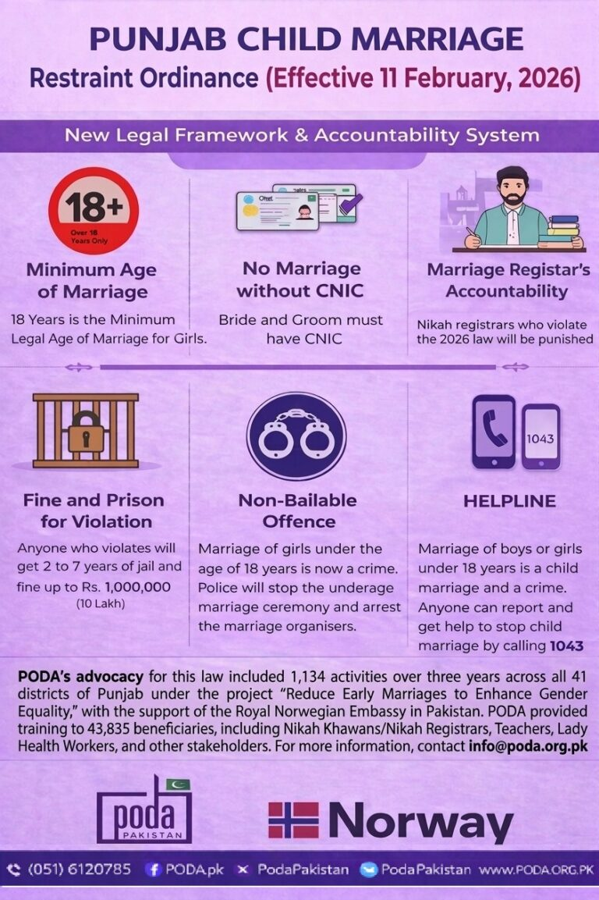
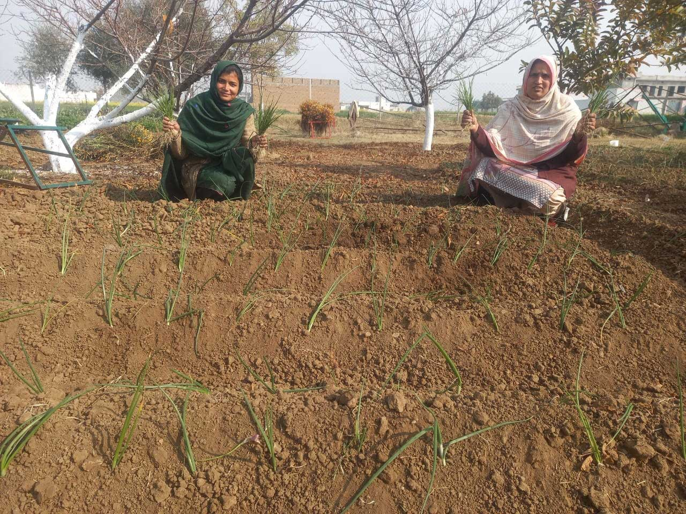
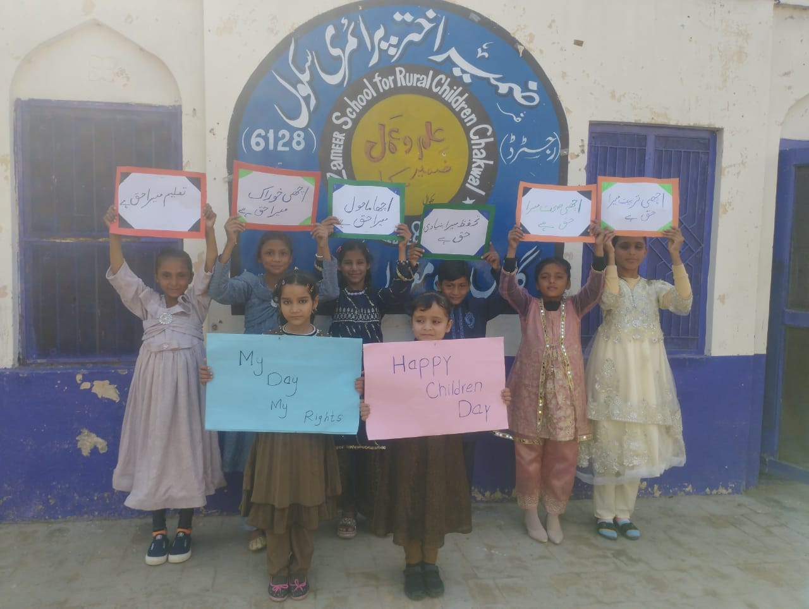
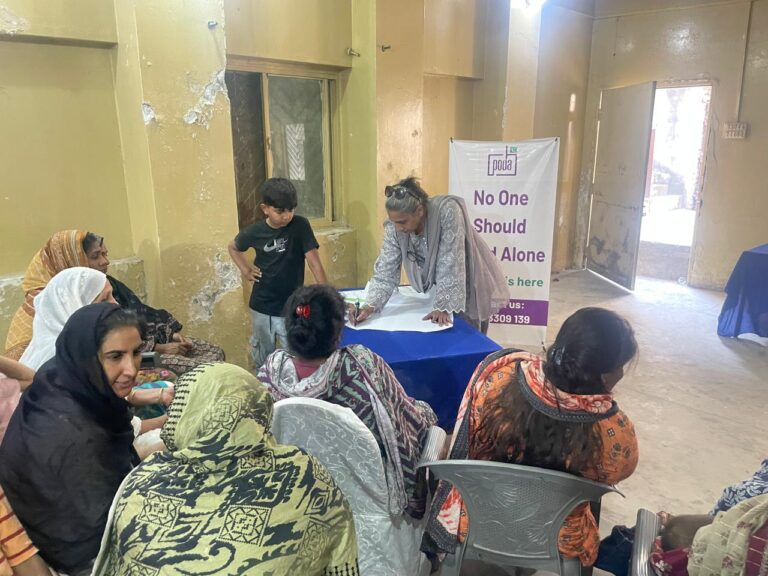
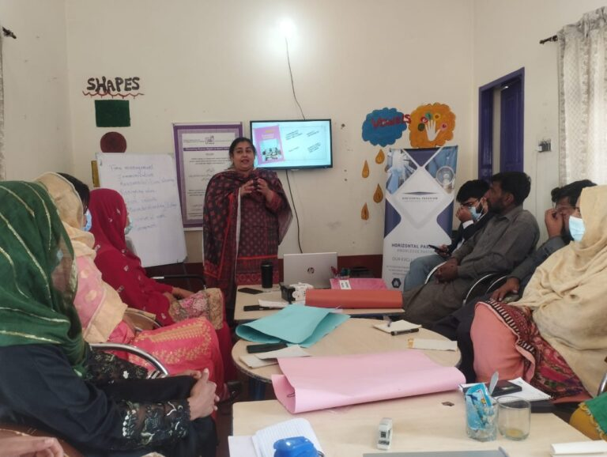
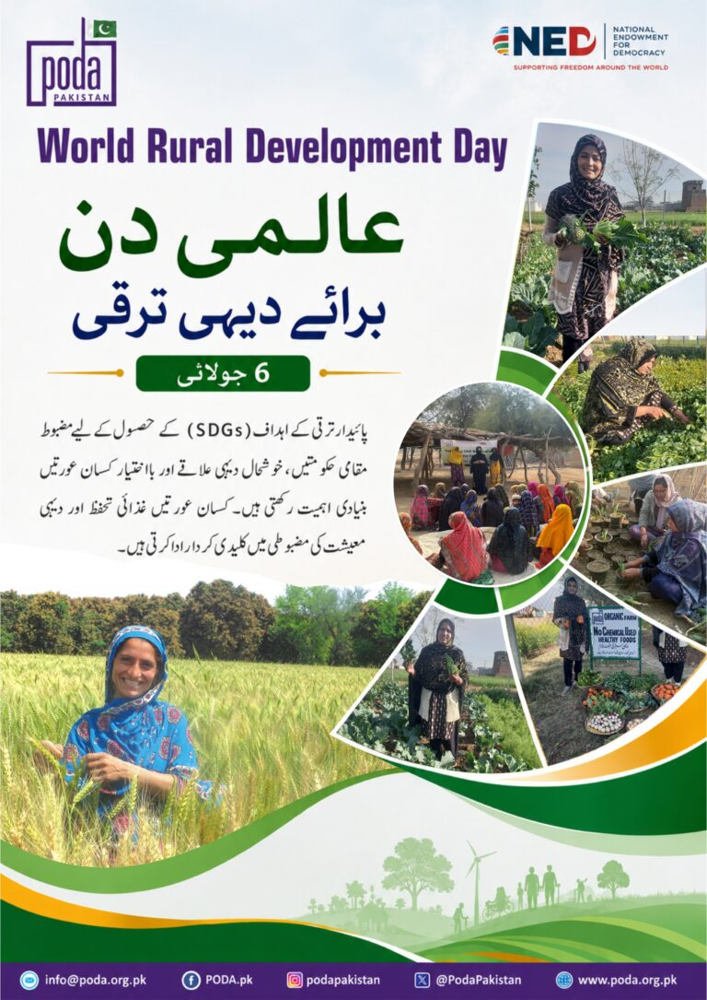

7 July 2026
206 Wednesday Webinar — Growing Population: Challenges & Solutions
Hosted by Ms. Nabeela Aslam of PODA Pakistan, 3:00–4:00 PM PKT on Zoom.
Weekly online sessions covering democracy, women's rights, climate resilience and civic leadership — open to all.
Hosted by Ms. Nabeela Aslam of PODA Pakistan, 3:00–4:00 PM PKT on Zoom.

A policy conversation with PARWL-Pakistan on advancing women's rights in rural communities.
Exploring climate-smart agriculture and green job opportunities for rural women and youth.

Community preparedness and humanitarian response strategies for flood-prone rural districts.

Addressing barriers to legal identity documentation for women and minorities in rural Pakistan.

Discussing policy interventions and community-level strategies to keep girls in school.

Marking the 200th session with a special panel on civic engagement and voter education.

Experts discuss legislative progress and community-level advocacy to end child marriage in Punjab.

Reflections from the 18th Annual Rural Women Leadership Conference and the road ahead.
No webinars match your search.